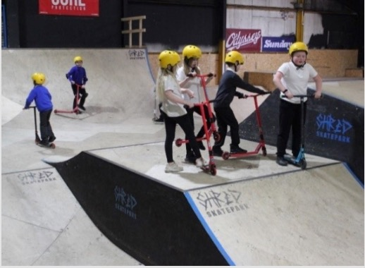
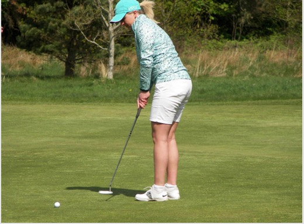
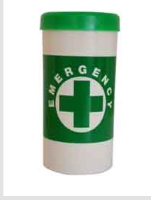
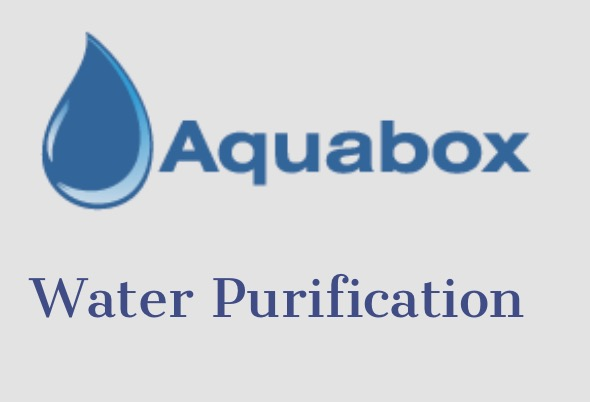
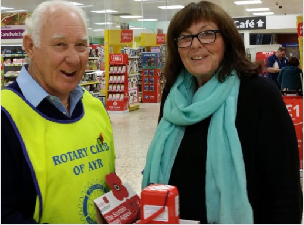
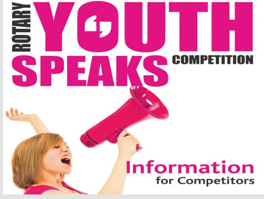

Major Projects
Ayr Rotary prides itself in being involved in so many projects. These not only help countless individuals, but also give meaning to being a Rotarian. As we are a large club, we can run several projects simultaneously, and members will often be involved in more than one project.
Below are some of our current projects. You can see projects we have completed in the past here.

Whetstone Tech Workshop Hub
A window of opportunity for young entrepreneurs to start a business based upon the computer-led Tech Industry.
Shred Skatepark

The Rotary Club of Ayr have initiated the Newton Primary Shred Skatepark Project, which allows many children from Newton Primary School to collectively enjoy the benefits from their scootering experience at Ayr's Shred Skatepark.
The project, which is sponsored and facilitated by the Rotary Club, is proving to be a great success due to the excellent collaboration between Newton Primary School and Shred Skatepark.
For more information and photos
For more information and photos Report
Ayrshire Alps Challenge

The Ayrshire Alps is a wonderful area of road cycling over the quiet hill roads of South Carrick in South Ayrshire. The challenge is a charity cycling event which the club organises every year in partnership with Malawi Fruits.
Starting and finishing at Turnberry on a Saturday in June, the event attracts a few hundred cyclists keen to test themselves over gruelling courses of spectacular hills and sweeping descents.
Have a look at the report on the most recent event.
Tree of Remembrance

Each year in the two weeks run up to Christmas, the club organises and erects a Christmas tree to be decked with yellow ribbons on Ayr High Street to raise funds for the Ayr Hospice, Ayr Cancer Support and Whiteleys Retreat.
The concept is that shoppers and passers-by can post a yellow ribbon with their own handwritten message to remember a loved one on the tree and make a donation.
Beach Clean

The Rotary Clubs of Girvan, Alloway, Ayr, Prestwick, and Troon hold the annual Beach Clean in conjunction with South Ayrshire Council, as part of the Keep Scotland Beautiful campaign.
Hundreds of bags full of discarded litter are collected every year. A perfect Rotary project where many volunteers are needed under strong leadership.
Charity Golf Day

We have run a Charity Golf Day for over 25 years, raising more than £150,000 for local charities. It is held at Belleisle Golf Course in May, with a stableford format.
This is a great way for businesses to promote themselves, perhaps take clients for a day out and at the same time give something back to the community.
Message in a Bottle

The Message in a Bottle initiative is an emergency information scheme that is provided free of charge by Rotary clubs and partner organisations.
It is kept in the fridge, with a sticker inside the front door, so emergency services can quickly find essential medical and contact information.
Aquabox

In autumn 2016, we embarked on a new project supporting Aquabox, which provides drinking water to disaster-hit areas around the world.
Lack of sanitation creates an ideal breeding-ground for water-borne disease. Cholera and typhoid are the most virulent of these, but they are not the whole story.
Poppy Appeal

Since 2010, the club has organised the Poppy Appeal in Ayr for Poppyscotland. Over 500 cans and boxes of poppies are distributed to shops, businesses, colleges, churches, and hospitals across the town.
A major logistical exercise, the club raised in the region of £25,000 for Poppy Scotland in 2021 alone. Our members and helpers participate every year.
Youth Service

Ayr Rotary are very keen to work with local schools by using our members' skills to help youngsters in a variety of organised competitions. More information
- Youth Speaks is a debating competition for secondary school children.
- Young Musician is designed to develop musical talent, both vocalists and instrumentalists.
- Rotary Youth Leadership Awards gives young people the chance to improve leadership and communication skills, in an outdoor environment.